3D Engine project
The 3D Engine project has been an exercise for me and two of my friends which i will list later. It has been an exercise in problem solving, project building and higher level maths as we are all high school students. In this documentation i will showcase the engines capabilities as well as give an explanation to it's inner workings. The whole project has been written in C++, window and point drawing is done using SDL2 library.
Piotr Rodkiewicz
Capabilities
Engine supports objects in 3d and 2d euclidean spaces, it can load STL files (3d printer models) and display all of them.
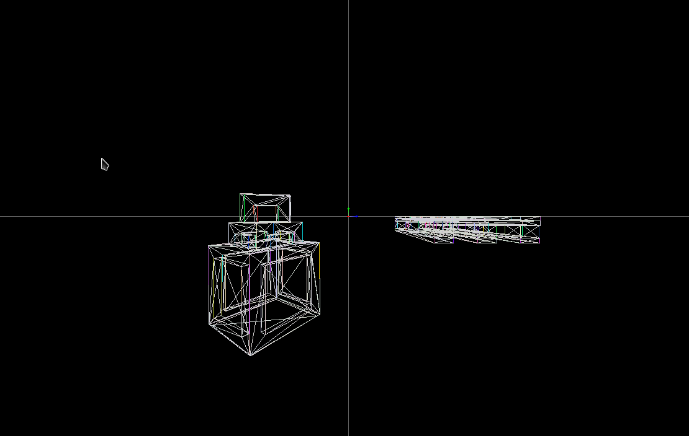
Project enables movement of the camera as well as transformations (rotation, scaling and rotation) of objects.
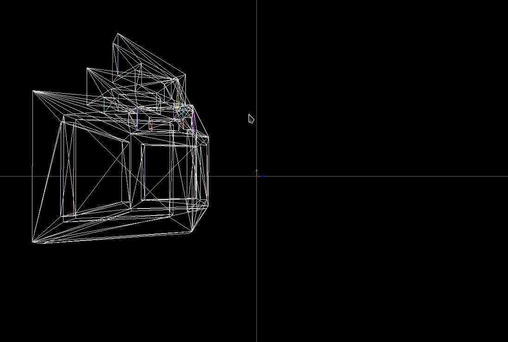
Engine Supports different view modes, for the time being they are wireframe and random color fill.
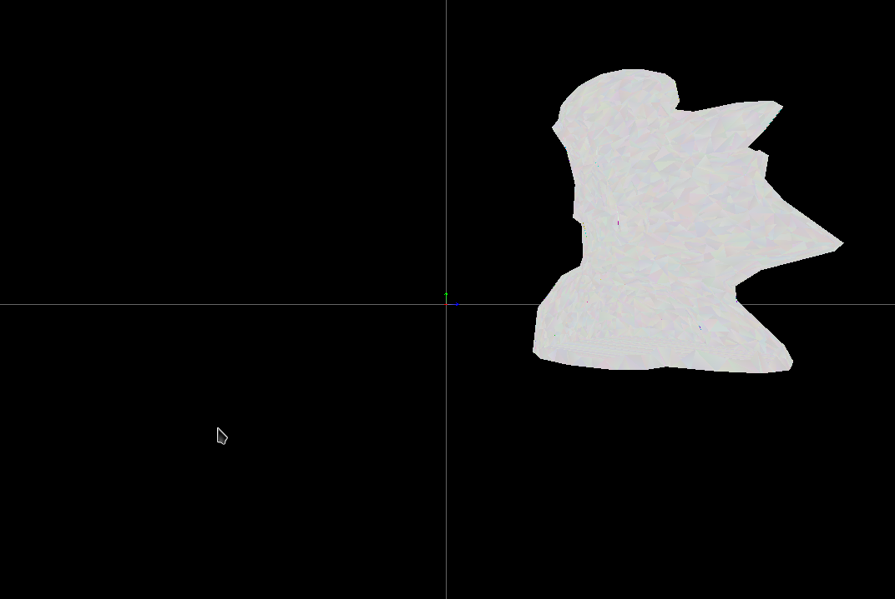
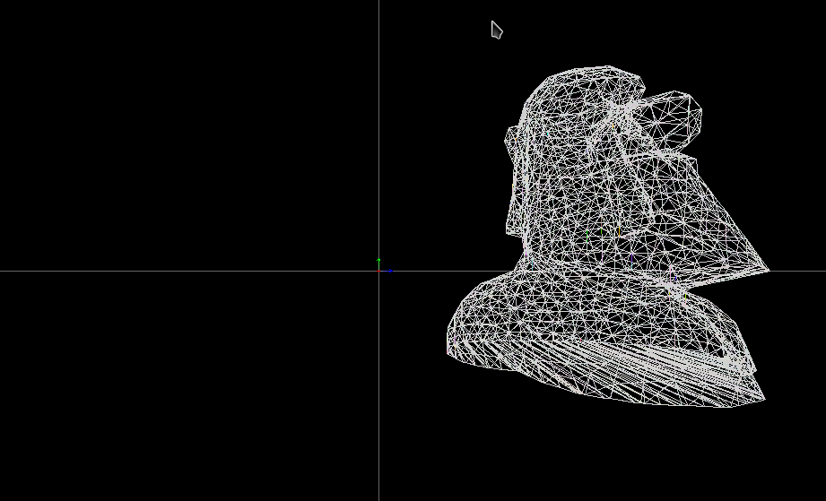
The biggest weakness of the project is that all of the computation heavy maths is being done by the CPU, GPU acceleration will be developed in the future.
Keys:
-
q - quit
-
w,a,s,d, space, shift - camera movement
-
m - togle render mode
Introduction
The engine is comprised of different non intertwined modules which are: 3D model, projection, 2D model and rasterization. There are also helper modules: math utils and stl utils which implement math needed to operate such project (for example matrix multiplication, matrix and vector structs etc.) and functions with which to operate on STL files.
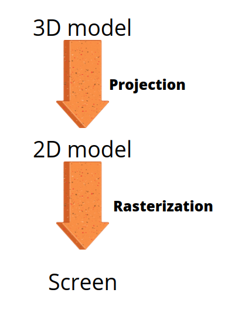
3D model
3D model contains an implementation of Object3 as well as transfomation functions regarding such objects.
Object3 is a 3 Dimenional abstract object which is essentialy a set of 3D math figures (mostly triangles but also lines and points) and an axis (point in 3D space) which can be set or computed as a mean of all the objects vertices.
All of the math transformations are being computed on axis->vertex vectors. both translation and setting the position use simple 3D vector addition to function, rotations about three main axis are computed by multiplying all the axis->vertex vectors by coresponding rotation matrix, eulers rotaion (rotation about a given axis) is in a TODO.
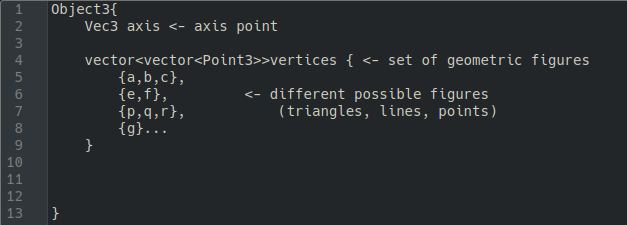
Projection
The projection section is probably the most advanced piece of the project by the math used. This module's purpose is to project 3D objects onto a 2D plane, it is a sort of bridge between 3D model and 2D model modules.
Model that has been used uses a camera (point in 3D space and vector describing a plane). The camera "captures" the object by computing line intersetion between camera-vertex lines and the camera plane.
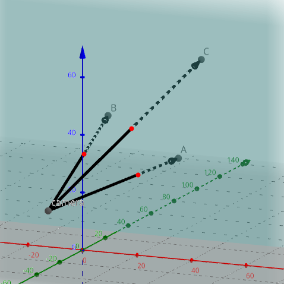
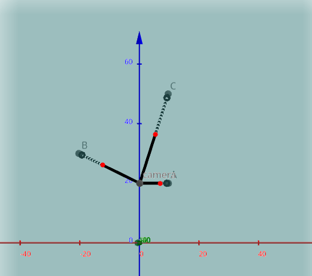
2D model
2D model contains an implementation of Object2 as well as transfomation functions regarding such objects.
Object2 is a 2 Dimenional abstract object which is essentialy a set of 2D math figures (mostly triangles but also lines and points) and an axis (point in 2D space) which can be set or computed as a mean of all the objects vertices.
All of the math transformations are being computed on axis->vertex vectors. both translation and setting the position use simple 2D vector addition to function, rotations about three main axis are computed by multiplying all the axis->vertex vectors by coresponding rotation matrix, eulers rotaion (rotation about a given axis) is in a TODO.
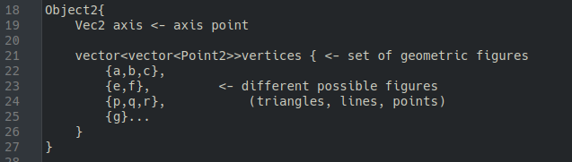
Rasterization
Rasterization is a brigde module between 2D math model and the screen. This module implements a couple algorithms which rasterize abstract figures. This module implements Bresenham's algorithm to rasterize a line, linear interpolation to determin colors inbetween two given points and a function to draw a color-filled triangle. Rasterization also implements a helper function which scales 2D objects to fit the screen.
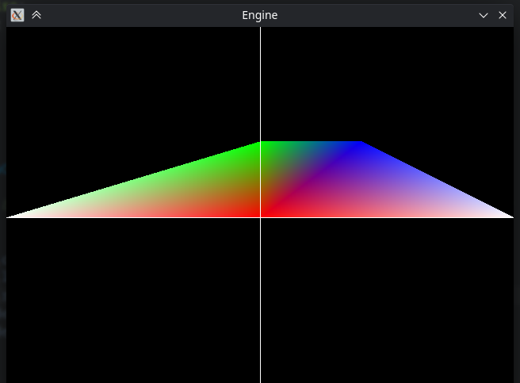
Compilation
Dependencies:
libsdl2-dev
make
If dependencies are not met you will need to install them:
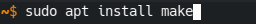
To compile the engine type:
To run the engine type:
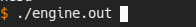
TODO
Some features that will be developed in the future but had to be postponed due to personal affairs:
-
full windows support
-
euler's rotation about a given matrix
-
GPU acceleration
-
projection optimalization, only computing that is visible
-
normal vectors implementation and their impact on the view model
-
YUV4MPEG2 video render implementation
Contributors
Here are github nicks of project contributors as well as their additions to the project.
-
Tomunek - STL_utils.cpp and example models
-
Koobson - matrix math and some small tweaks